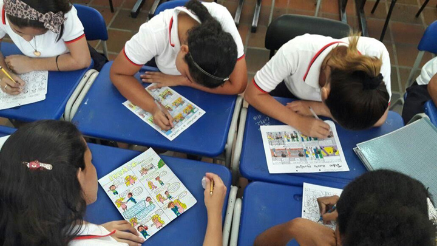
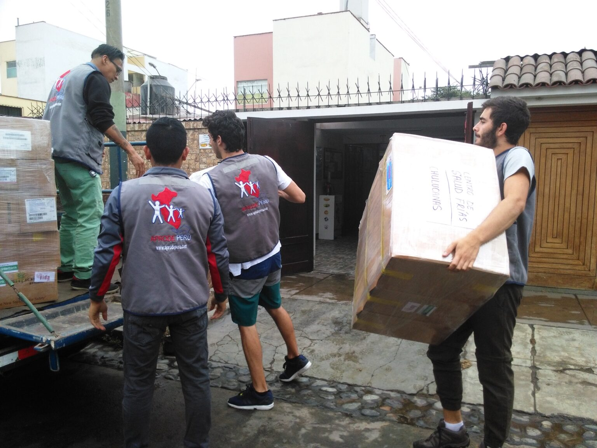

| Evento |
Descripcion |
|  |
La primera donacion que realizamos fue a una escuela de bajos recursos ubicada en un pueblo fuera de la ciudad, nuestro equipo realizo una aportacion economica obtenida de la venta de los libros en nuestra web, ademas se realizo una donacion de materiales escolares dicho evento se llevo acabo el 26 de septiembre de 2021. Tambien se donaron escritorios, sillas, ordenadores, etc. |
 |
El dia 17 de julio de 2022 obtuvimos un record en ventas con mas de 70.000 a lo largo de 6 meses, libros que fueron donaciones de nuestros mismos cliente personas que se sumaron a esta buena causa, asu vez alcanzamos el mayor numero de donaciones de libros al mes dicho acto nos permitio darle otra vida a libros que ya no eran utilizados y desde luego realizar mas donaciones |
|  |
Nuestro equipo se contacto con una casa hogar de pocos recursos, la cual constaba con mucha cantidad de acogidos por lo que necesitaban ayuda tanto economica como material para avasteser a todas las personas, por lo que realizamos donaciones de electronico como refrigeradores, hornos, estufas, vagilla asi como de colchenes, ropa y viveres |